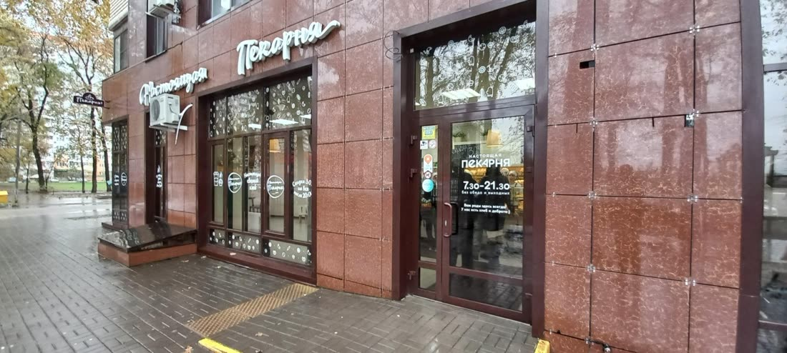
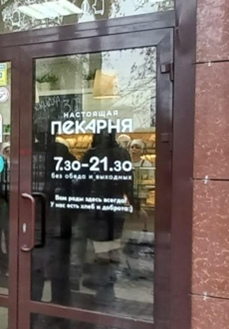
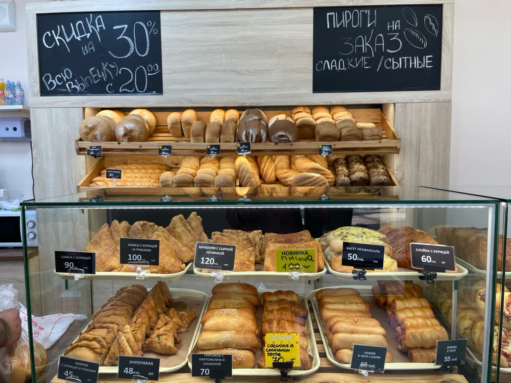
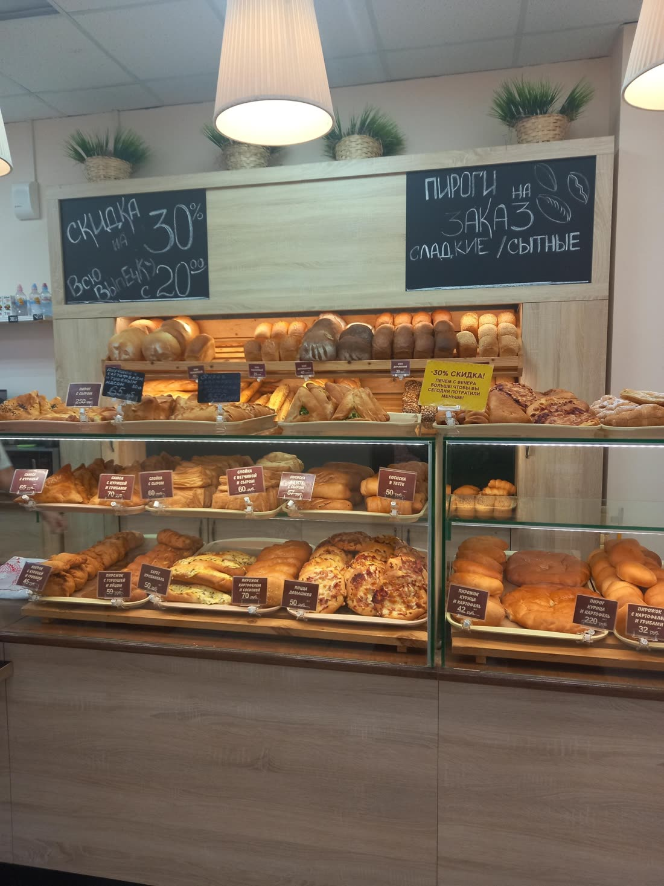

| Героев-Разведчиков, 48 | 2ГИС | Яндекс Карты |
|---|---|---|
| Рейтинг | 5,0 · 591 оценка, 146 отзывов | 4,8 · 399 оценок, 201 отзыв |
| Актуальность | «Компания давно не обновляла данные» | Карточку ведут: есть ответы |
| Часы | 7:30–21:30 | до 21:30 |
| Цены | Нет, вкладка «Меню» пустая | 3 позиции, «Давно не обновлялось» |
| Ответы на отзывы | 1 из 50 последних, октябрь 2022 | 18 из 50 |
| Скидка 30% с 20:00 | Не указана | Не указана |
| Сайт, мессенджеры | Нет | Нет |
Все лавки в 2ГИС
| Лавка | Рейтинг | Отзывы | Ваших ответов | Фото | Статус |
|---|---|---|---|---|---|
| Героев-Разведчиков, 48 | 5,0 · 591 | 146 | 1 из 50 | 25 | давно не обновляла |
| Валерия Гассия, 2/а | 5,0 · 179 | 108 | 1 из 50 | 22 | давно не обновляла |
| Железнодорожная, 24 | 4,9 · 139 | 80 | 0 из 50 | 16 | давно не обновляла |
| Скрябина, 4 | 5,0 · 24 | 18 | 0 из 18 | 4 | давно не обновляла |
| Обрывная, 132/1 к4 | 4,5 · 22 | 19 | 2 из 19 | 8 | давно не обновляла |
Фото: общий альбом карточки, без панорам. Телефон во всех пяти карточках один: +7 861 945-11-00.
Что нашёл
На всех пяти лавках 2ГИС пишет «Компания давно не обновляла данные» важно
Эту строку видит каждый, кто открывает любую из ваших карточек. В разделе «Актуальность данных» стоит «не подтверждена». Человек, который ищет, где купить хлеб по пути домой, читает это как «может, уже закрылись» и идёт в соседнюю пекарню, у которой такой плашки нет.
В 2ГИС отзывы остаются без ответа, хотя в Яндексе вы отвечаете важно
На 187 последних отзывов всех лавок в 2ГИС всего 4 ответа. На главной лавке единственный ответ написан в октябре 2022. Без ответа висят и свежие тяжёлые отзывы: в августе 2026 человек поставил 1 звезду с жалобой на начинку слойки, в сентябре 2026 пишут «вкусно, но дороговато». При этом в Яндексе на той же лавке ответы есть на 18 из 50 отзывов, значит, человек, который отвечает, у вас есть. 2ГИС просто выпал.
На вывеске «Настоящая пекарня», а в картах «Лавка Афанасьевых» заметно
На фасаде и на двери лавки на Героев-Разведчиков крупно написано «Настоящая пекарня», имени «Лавка Афанасьевых» не видно. Человек открывает карту, идёт к «Лавке Афанасьевых» и видит другую вывеску. А тот, кто запомнил вывеску и ищет «Настоящая пекарня», ваши карточки не найдёт.


Цен нет, хотя на витрине они подписаны у каждой позиции заметно
Вкладка «Меню» в 2ГИС пустая, вместо цен там просьба к посетителям «сфотографируйте меню». В Яндексе меню есть, но помечено «Давно не обновлялось»: хлеб пшеничный 55 ₽, батон 50 ₽, пицца 80 ₽ за 100 г. Актуальные цены люди видят только на фото витрины, которые выложили гости.

На вопросы покупателей отвечает ИИ, а не вы заметно
В блоке «Вопросы о месте» в 2ГИС висят вопросы Когда обычно выносят свежий хлеб?
, Есть ли торты на заказ?
, Доставляют ли вашу выпечку?
, Есть ли безглютеновая выпечка?
. Отвечает ИИ-помощник 2ГИС, своими словами и по догадкам.
На вашей карточке рекламируются другие пекарни заметно
Прямо под адресом главной лавки стоит реклама «Хлебных историй» с кнопкой «Заказать доставку», ниже «Булочка», «Буфет-рулет», «Кудесница» и «Крендель» с пометками «Торты на заказ». А в списке ваших пяти филиалов между лавками вставлена реклама кондитерской «Ванлав».
Скидка 30% после 20:00 и пироги на заказ есть только на доске в лавке просто
На меловой доске: «Скидка 30% на всю выпечку с 20:00» и «Пироги на заказ, сладкие и сытные». В отзывах про скидку пишут постоянно, в Яндексе тема «Скидки и акции» набрала 16 отзывов и 100% положительных. Но ни в одной карточке акции нет, а рубрики «Пироги на заказ» нет совсем.

Мало своих фото, особенно снаружи просто
На главной лавке в 2ГИС 25 фото, из них 16 выложили гости, снаружи всего 3. На Скрябина 4 фото, на Обрывной 8. Среди гостевых много надкусанной выпечки крупным планом, и именно такие фото люди видят первыми.
Новые лавки почти без оценок просто
У главной лавки 591 оценка, а у Скрябина 24 и у Обрывной 22, причём на Обрывной рейтинг 4,5, самый низкий в сети. При таком малом числе пара плохих отзывов заметно тянет рейтинг вниз. В Яндексе ваша лавка на Железнодорожной уже получила «Хорошее место 2026», а остальные нет.
Что предлагаю
Беру на себя всё из списка, от вас нужен только код из СМС для подтверждения карточек.
- Подтвердить все пять лавок в 2ГИС и Яндексе, единые часы, рубрики, второе название с вывески
- Цены с витрины в обе карты, акция «минус 30% с 20:00», пироги и торты на заказ
- Ответить на все отзывы и вопросы и дальше отвечать на новые
- Хорошие фото каждой лавки: вход, витрина, выпечка
- Сайт пекарни со ссылкой из всех карточек: вот концепт
- Раз в месяц отчёт по каждой лавке: просмотры, звонки, маршруты
Разбор бесплатный. Стоимость работ обсудим, она небольшая.